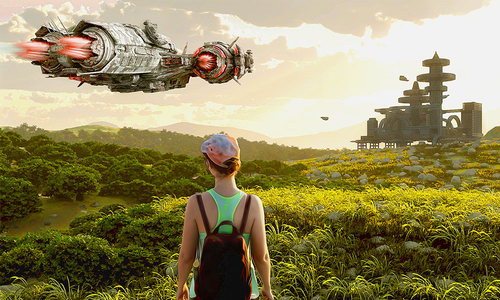

Some stories wear their inspiration on their sleeve, and the title of Kyle E. Miller's wonderlandish excursion through a decaying plane pays clear homage to the Harlan Ellison classic, "I Have No Mouth, and I Must Scream". Prepare yourselves for a similarly rich, strange journey, but there the similarities very definitely end...


You'll find what you're looking where you left it, or so the unhelpfully wise would tell you, forgetting (or ignoring) that this doesn't account for interference from any bad actors out there. Gabrielle Bleu shows that what you might instead need could still be nearby, and yesterday's enemy could be today's friend.
Life Isn't Fair - the formative lesson of childhood, preparing us for the painful reality we're going to have to grow up and live with for seventy years or more, if we're lucky. But while you're learning to accept it, Hannah Hulbert suggests you consider: If life isn't fair, could it be that unlife is?

Ghost stories and romance — what could be a more perfect match? Oh course, there's inevitably the risk of tragedy with such a pairing, but Daniel Rabuzzi gives us reason to hold out hope that love really can conquer all… even across centuries.

Social Media - some love it, some hate it, but there is certainly a rich vein to mine in how the contemporary digital landscape will evolve in the future. Paul Alex Gray strikes more than just crypto-currency with this tale of a pre-apocalyptic soldier-for-hire who has to deal with a whole lot worse than online trolls.
Here we have the first of two substantial sci-fi pieces with a focus on family, one in which overcoming separation is at the heart of things, the other with gaining independence as the goal - both presenting futures of interplanetary colonisation. Jalyn Renae Fiske takes us very far from home and, against all circumstance, shows that there could be a home there too.
Depression is a kind of war. Oppression is as well. When you find yourself living through intolerable times, just surviving can be a small act of defiance, or even rebellion. But as Katie McIvor's story underlines, there may still come a point at which survival-rebellion isn't enough.
Closing out this issue is our second long sci-fi read, and as previously hinted at, they serve as inverted reflections of each other. In Claire Scherzinger's tale, we focus on a daughter seeking escape rather than a father desperately searching, and while the previous story swiftly departed from a technological environment for a more primitive one, this time it's a seemingly simple way of life being abandoned for an infinitely wider world.
